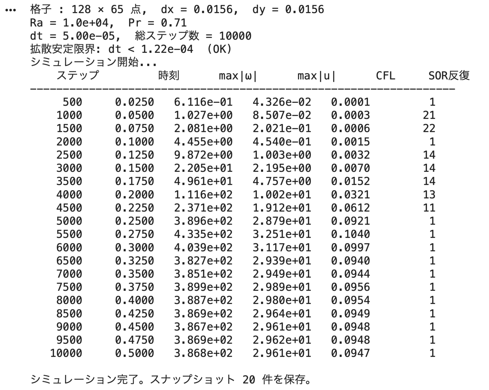
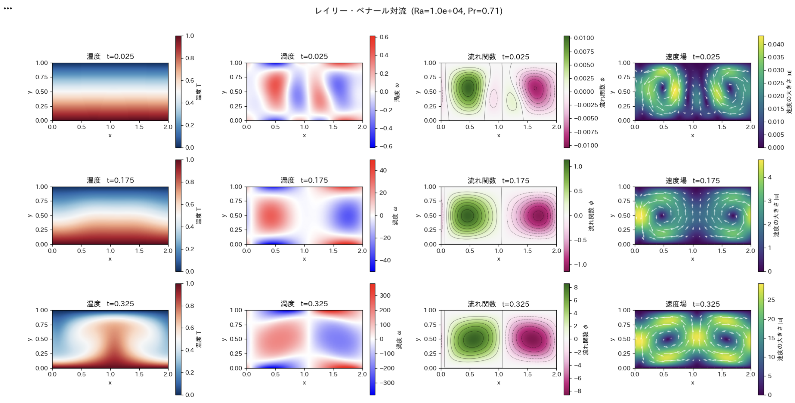

4. ハンズオン手順
ノートブックを開く
以下のリンクから Google Colab でノートブックを開いてください：

Google アカウントでログインした状態で開いてください。 「ドライブにコピー」ボタンを押して、自分のアカウントにコピーしてから実行してください。
ノートブックの構成
ノートブックは以下の4つのセルブロックで構成されています：
| セル | 役割 |
|---|---|
| セル 1（説明セル） | 物理背景・支配方程式・数値手法の解説（Markdown） |
| セル 2（インポート） | NumPy・Matplotlib などのライブラリ読み込み |
| セル 3（パラメータ＋本体） | シミュレーションパラメータの設定・初期条件・関数定義・時間ループ |
| セル 4（可視化） | スナップショット・アニメーション・ヌセルト数の描画と保存 |
パラメータ一覧
セル 3 の冒頭にある「シミュレーションパラメータ」を変更して条件を設定します。
格子パラメータ
| 変数名 | デフォルト値 | 説明 |
|---|---|---|
Nx |
128 |
x 方向の格子点数（周期方向） |
Ny |
64 |
y 方向の格子点数（壁から壁） |
Lx |
2.0 |
x 方向ドメイン長（アスペクト比 2 がベナールセルの典型） |
Ly |
1.0 |
y 方向ドメイン高さ（無次元で 1） |
物理パラメータ
| 変数名 | デフォルト値 | 説明 |
|---|---|---|
Ra |
1e4 |
レイリー数（対流開始は Ra ≈ 1708；大きいほど対流が強い） |
Pr |
0.71 |
プラントル数（空気 = 0.71、水 ≈ 7、マントル ≈ 1e23） |
時間積分パラメータ
| 変数名 | デフォルト値 | 説明 |
|---|---|---|
dt |
5e-5 |
タイムステップ（不安定なら小さくする） |
n_steps |
10000 |
総タイムステップ数 |
n_output |
500 |
スナップショット保存・出力の間隔 |
SOR ソルバーパラメータ
| 変数名 | デフォルト値 | 説明 |
|---|---|---|
omega_sor |
1.8 |
過緩和係数（1 < ω < 2；～1.8 が最適に近い） |
tol_sor |
1e-4 |
SOR 収束判定の許容誤差 |
max_iter_sor |
5000 |
SOR 反復の上限 |
ステップバイステップ実行手順
- ノートブックを自分のドライブにコピーする
-
上部メニュー「ファイル」→「ドライブにコピーを保存」
-
セル 2 を実行する（ライブラリのインポート）
- セルをクリックして
Shift + Enterを押す -
japanize-matplotlibのインストールメッセージが出れば OK -
パラメータを確認・変更する（セル 3 の先頭部分）
-
まずデフォルト値のまま実行することを推奨
-
セル 3 全体を実行する（シミュレーション本体）
- 実行中はステップ数・時刻・CFL 数などが逐次表示される
Nx=128, n_steps=10000の標準設定で30秒〜1分程度かかる
実行例

- セル 4 を実行する（可視化）
- 4 時刻のスナップショット、アニメーション、ヌセルト数グラフが表示される
実行例

- パラメータを変えて再実行する
RaやPrを変えてセル 3 → セル 4 の順に再実行
結果の読み方
温度場（T）
- 赤（濃い）= 高温（下壁付近）
- 青（薄い）= 低温（上壁付近）
- 対流セルが形成されると、温度場が左右に揺らぐ縞模様になる
渦度場（omega）
- 赤 = 正の渦度（反時計回りの回転）
- 青 = 負の渦度（時計回りの回転）
- 対流セルの境界に強い渦度が集中する
流れ関数（psi）
- 等値線が流線を表す（流体粒子が辿る経路）
- 楕円形のループが対流セル一つに対応する
ヌセルト数（Nu）
- Nu = 1：対流なし、熱は伝導のみで運ばれる（点線の基準値）
- Nu > 1：対流が熱輸送に貢献している
- Ra が大きいほど Nu が大きく、対流による熱輸送が支配的になる
うまくいかない時は
計算が途中で発散（値が巨大になる）した場合：
- 出力に
*** 警告: max|ω| ***が表示されていないか確認する CFLの値が 0.8 を超えていたらdtを半分にする（例：dt = 2.5e-5）- Ra を非常に大きく（1e6 以上）した場合は
dtをさらに小さくする - 注意：
dtを小さくすると1ステップあたりの時間進みが短くなります。シミュレーションが到達する物理時刻はdt × n_stepsなので、dtを半分にした場合はn_stepsを2倍にしないと同じ時刻まで計算できません。
SOR 反復数が常に max_iter_sor = 5000 になる場合：
- ポアソン方程式が収束していない可能性がある
tol_sorを少し大きくする（例：1e-3）か、omega_sorを 1.5 に下げて試す
実行が遅すぎる場合：
NxとNyを半分にする（例：Nx=64, Ny=32）n_stepsを 5000 に減らす